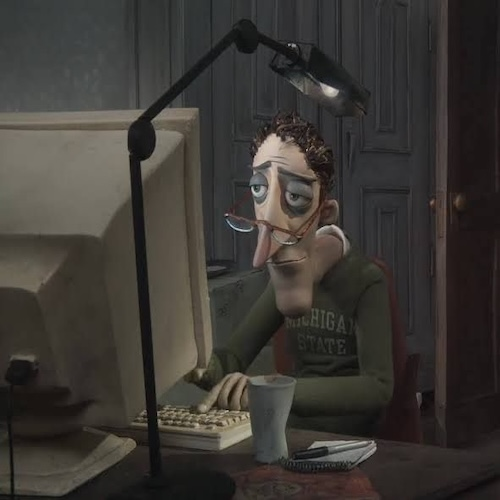

Coraline Jones
Coraline is a brave and restless girl who moves into the Pink Palace with her parents. While exploring, she finds a tiny door that leads to a world that looks like her own but feels strangely perfect. Her courage is tested when she realizes that not every wish for attention and love comes without a cost.
Meet Coraline
Mel Jones
Mel Jones works hard and keeps the family organized, even when life gets a little messy. She often reminds Coraline to be careful and responsible, but her love is always steady and strong. Her quiet care shows that sometimes love is expressed in small, everyday ways.
Meet Mel

Charlie Jones
Charlie Jones is thoughtful and creative, often humming to himself while cooking or gardening. He enjoys spending time with his family and always tries to bring a little humor into their day. His calm nature balances Coraline’s energy, making their home feel warm and safe.
Meet Charlie
Wybie Lovat
Wybie is Coraline’s funny and kind friend who loves to share stories and explore. He’s always ready for an adventure, whether it’s riding his bike or helping Coraline solve a mystery. His loyalty and cheerful spirit make him someone Coraline can always count on.
Meet Wybie